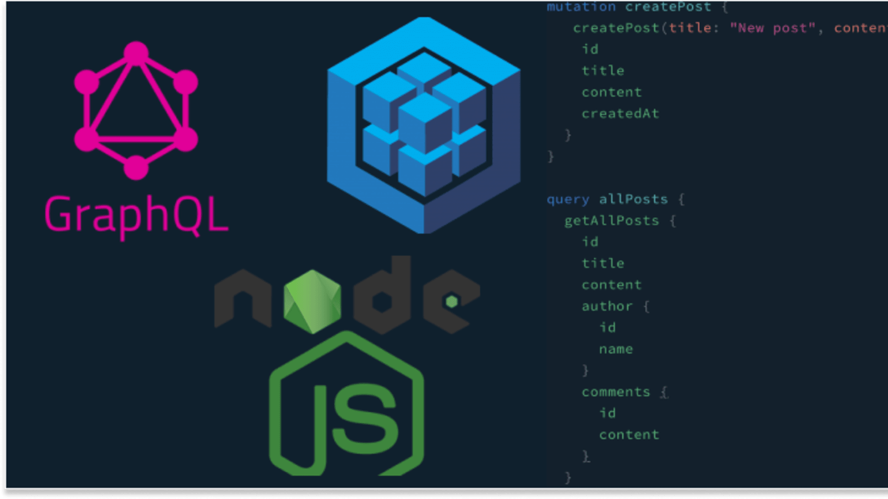
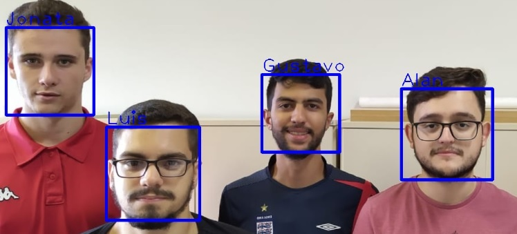

Oi, meu nome é Jonata Souza
Eu sou o desenvolvedor back end que você precisa!
Leia mais
Resumo
Sou técnico em informática, atualmente estou cursando o último ano do curso de Ciências da Computação na Universidade Federal de Ouro Preto e estou trabalhando como desenvolvedor Back-End na Lone Wolf, neste trabalho, desenvolvo Crawlers em Python, em Node desenvolvo Apis Rest, Apis em Graphql em consonância com a utilização de ORMs para trabalhar com banco de dados MySQL e NoSQL como exemplo o Sequelize.
Já realizei um estágio de nove meses em uma empresa de arbitragem de criptomoedas, neste estágio participei do desenvolvimento de bots, no desenvolvimento de testes e na criação da website da empresa utilizando o framework Django. Me considero uma pessoa esforçada, pois sempre me dedico ao máximo para alcançar meus objetivos. Busco sempre sonhar alto para me auto desafiar e encontrar o meu limite como pessoa. por fim, procuro sempre ajudar as pessoas ao meu redor a solucionarem problemas.
Projetos
Facial Classification
A contabilização da frequência dos alunos dentro de sala de aula é, atualmente, um processo manual realizado pelo professor. Este projeto foi desenvolvido por mim em conjunto com meu amigo Alan Erse, o código foi desenvolvido em Python sendo capaz de realizar a identificação e classificação de alunos presentes em uma imagem atribuindo suas presenças a uma planilha do Google Sheets.